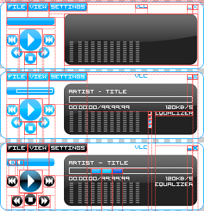

In this tutorial you will learn the basics of creating a skin for VLC.

Example of how your image document could look like. The red lines indicate the slices.
First of all you have to design your skin in a graphics program like Photoshop or GIMP.
In the designing process you should think of the following components:
When you create your skin also consider that each control/button has three states: normal, mouseover and clicked.
For example you could create a big image for each window, where the window with it's controls is shown three times. One for each status. Then it is recommended that you split up this image with slices. (Slices refer to a tool in Photoshop, I don't know how or whether at all this is possible in GIMP or other programs). Then save each slice, or subimage, as a PNG file.
Choose to create a new skin and save it in it's own folder. Into this folder you should copy all your PNG images. Then you have to make the available in the skin by clicking on the Add Bitmap button at the bottom of the Resources window. Select the PNG files in the file chooser. They will be added automatically as bitmap resources and identified by their file names without the extension.
Then create a new window by clicking on the Add Window button at the bottom of the Windows window. Choose an id for the window, e.g. "Main" if it is the main window. The X and Y attributes determine where the window appears the first time the skin is opened. If you set drag-drop to true, files can be dropped into this window and will be added to the playlist. If play on drop is true the dropped files will be played immediately after they have been dropped into the window, otherwise the will be just added to the end of the playlist.
Now you'll have to add a layout to the window. Layouts determine different appearances of a window. For simple skins there are only needed on layout per window. Note that if you use several layouts, the last in the list will be shown the first time the skin is opened. You can modify the position of a layout in the hierarchy by selecting it an using the Up and  Down buttons at the bottom of the Windows window.
You'll have to choose an id for the layout, you should always select ids that represent what is displayed. Under initial width and height you have to enter the dimensions of the window when this layout is displayed. If your window is not resizable you can ignore the other attributes and leave them at -1.
Down buttons at the bottom of the Windows window.
You'll have to choose an id for the layout, you should always select ids that represent what is displayed. Under initial width and height you have to enter the dimensions of the window when this layout is displayed. If your window is not resizable you can ignore the other attributes and leave them at -1.
After you have added the layout it should be selected in the Windows window and a preview window of your layout should have opened to the right. It should be filled with a gray/white tile pattern. This pattern symbolizes transparency, so the parts of your layout where you see this pattern will not be visible in VLC.
Now move on to the Items Window.
All images making up this window but should not trigger any action are represented by "Image" items. Normally a layout has at least one image item that represents the window's background. For each slice of the window that should not have any function, click on the Add Item button at the bottom of the Items Window and choose Image. Enter any ID that you feel comfortable with, just note that IDs must be unique. Set the image attribute to the id of the bitmap resource representing this image. Set the X and Y attributes to the position where the image should appear. After having added the image you can also move it around with the cursor if you have selected in the Items window. The currently selected item is highlighted in the preview window by a red border. By default the action attribute of an image is set to move. This enables the user to drag the window around by clicking on the image. You can disable this by selecting the action none.
Controls that do not change their appearance when a certain status changed are represented by Button items. You should use buttons e.g. for the controls to skip to the next/previous item in the playlist etc. For the Play/Pause button you should rather select a checkbox, which are considered later on.
Now let us consider the button's attributes:
For the up attribute choose the bitmap resource representing the image of the buttons default state. For the hover attribute choose the bitmap resource representing the image of the buttons state when the mouse is over it. For the down attribute choose the bitmap resource representing the image of the buttons state when it is pressed. The action that should be fired by clicking on the button can be defined with the help of the ActionEditor which can be opened by clicking on the button next to the action-textfield.
Checkboxes are similar to buttons only that they have two states. You can choose a boolean variable from the documentation to set the condition of the checkbox. You have to enter for both states, if the condition resolves to true or to false, the up,hover and down bitmap resources.
To edit the skin's settings like author etc. choose Edit  Theme settings from the menubar.
Theme settings from the menubar.
This should be enough as a brief introduction to the usage of the skin editor. For more advanced usage consult the documentation. There the Playtree, Video and other items are described in detail.
When you finished your skin choose File Export as VLT and submit the generated VLT file at the skins upload form so that it will be added to the skins download page.